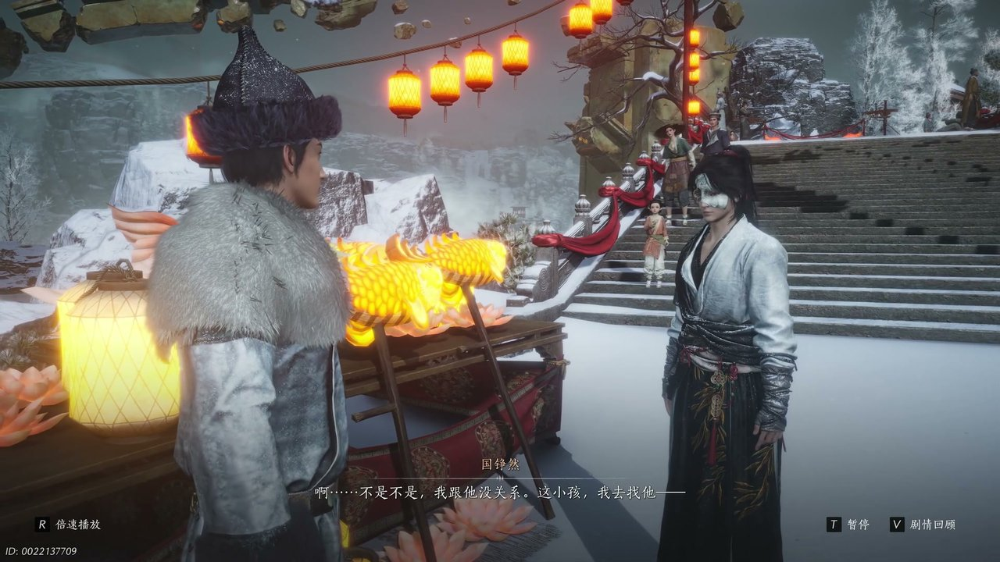
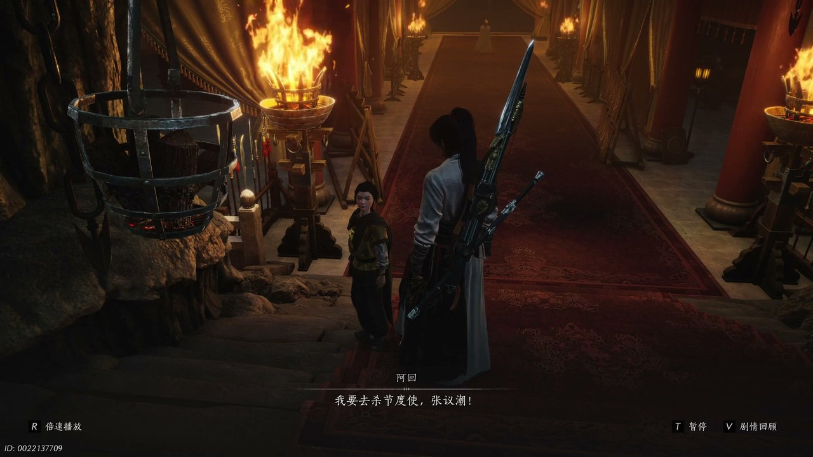
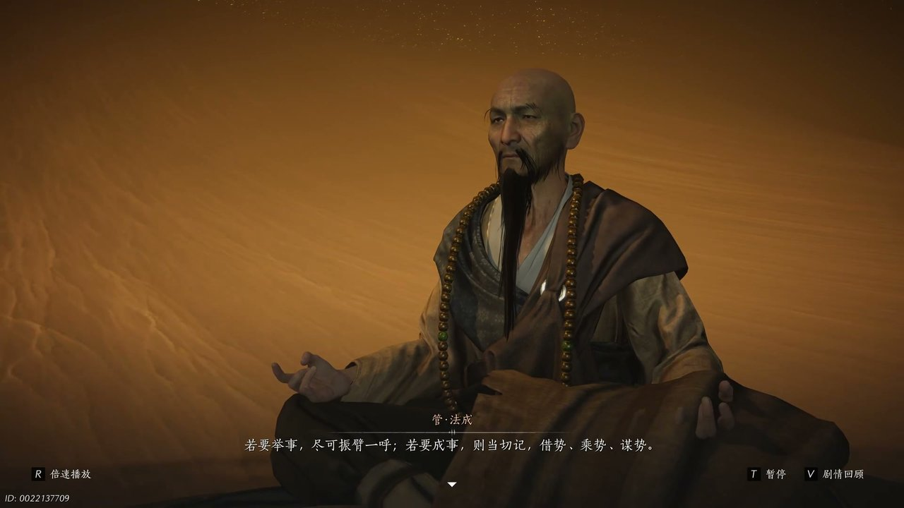
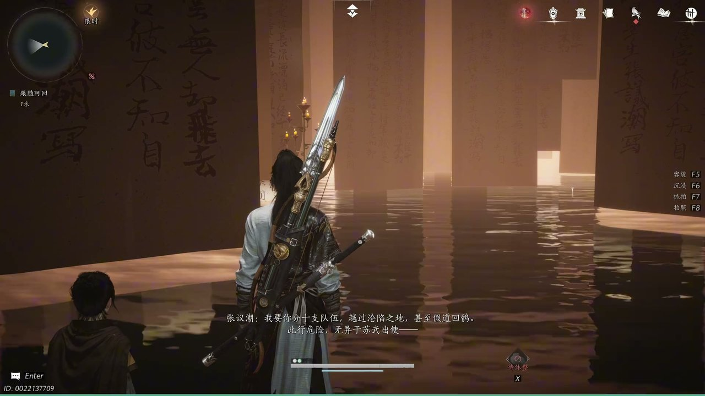
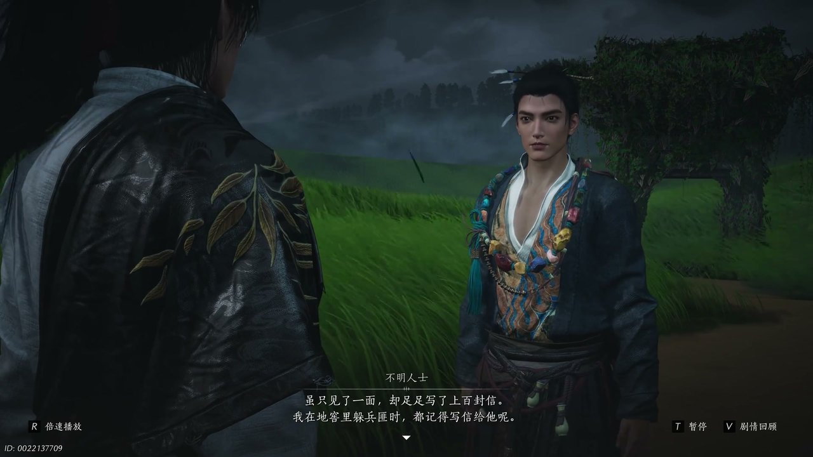

燕云背后的故事：第15集 画卷
燕云背后的故事：第15集 画卷

朋友们，上一集咱们说到——月下合围危机、长安奔赴之约、双姝身陷险境，凉州夜色暗藏汹涌变局。新来的朋友可能纳闷，安琉璃与曹敬观音定下长安之约后，为何骤然遭遇兵士围堵。简单说，二人奔赴自由与繁华的期许，触动了凉州潜藏的各方势力利益，招致暗中伏击。可他哪知道，这场突发危机只是开端，江湖与朝堂的隐秘棋局已然缓缓启动。这不，混乱局势悄然跳转，少东家意外卷入市井琐事，一桩鱼灯闹剧牵出全新江湖秘闻。

凉州街市灯火未尽，沿街摊贩林立，暖黄灯火映亮平整的青石街道，往来行人零星穿梭，依旧留存着灯会的余温。鱼灯摊位前堆叠着造型精巧的鱼形花灯，鼓鼓的灯身透着温润光泽，摊主抬手比划着灯的样式，热情招揽往来客人。一名稚气未脱的陌生少年驻足摊前，目光紧紧盯着各色鱼灯，开口说道：“给我看看，怎么样？”摊主笑着应声，连忙介绍货品：“这鱼灯啊肚子大，天满有能量，真的，一个才三十文，实惠得很呢。”少年听闻价格，当即爽快敲定采购，接连说道：“那我要十个，二十，你快给我包起来。”少年转头望向人群后方，指着缓步走来的少东家，对摊主说道：“小少爷，二十个，自己也拿不了呀，我哥哥在呢，他帮我拿，他帮我付钱。”少东家见状连忙上前摆手辩解，神色无奈又窘迫，仓促间被无端卷入这场市井纠葛。

少年话音落下，少东家快步上前，神色急切地开口澄清：“不是不是，我跟他没关系，这小孩，我去找他。”摊主见状误以为少东家想要赖账，当即抬手阻拦，高声向周遭路人呼喊：“休想总让我三个小孩，他已拿了一个灯，你又要跑，和我赖账啊，大家看哪，有人抢东西，还赖账！”喧闹声瞬间引来周边行人驻足围观，街市氛围骤然变得紧张。值守的闻声赶来，沉声宣读规制：“十楼线属归役军管辖，贤人直捕。”混乱之中，少年悄然挪动脚步向后退避，少东家快步追上对方，语气带着几分严肃与无奈说道：“我也晓得，他把钱还来，怎么这么不学，抢要人家的东西。”少东家望着眼前顽劣的少年，放缓语气耐心劝导，询问其身世来历，直言若是家境贫寒无力支付，便将鱼灯赠予对方，叮嘱对方不可再肆意强取他人财物。

少年褪去方才顽劣嬉闹的模样，神色骤然沉敛，周身气场瞬间冷冽下来。一旁名为阿回的人快步上前抬手阻拦，出声制止道：“别动手。”少东家见状微微驻足，静静观察二人动向，开口轻声问询：“如何？”阿回转头看向少东家，语气带着决绝与释然，坦言自身境遇：“我要去杀戒斗士，争议仇，你害怕长虫，那你回去吧，我不连累朋友。”晚风轻轻吹动阿回的衣摆，他目光坚定，毫无退缩之意，继续郑重承诺：“余灯的钱，我一定还你。”少东家看着对方决然的模样，想要开口劝慰，却见阿回心绪翻涌，低声呢喃：“静心，我静不了。”短短数语道尽心中积压的仇怨与执念，也让这场市井闹剧，悄然牵扯出不为人知的江湖恩怨。

场景骤然切换，清雅室内光影沉静，书卷陈列整齐，张议潮与管法成相对而立，二人对坐闲谈，言语间满是家国感慨与人生思索。张议潮缓缓细数往昔功绩，语气带着几分怅然与不甘：“冠军侯十八岁，两战成名，二十岁智取七连，合习四军，由此而射，二十二岁，封狼居胥，瀚海扬帆，二十四岁，已留名青史，而我，三十，功业未成。”管法成静静聆听，随后缓缓开口点拨，道出两种人生抉择：“还是要举世，还是要承识，若要举世，竟可振臂一呼，若要承识，则当切记，既是承识，谋识，知不知呢。”张议潮闻言默然沉思，眼底满是对家国大业的执着与对自身境遇的唏嘘，边关壮志与岁月遗憾交织，尽显乱世英雄的隐忍与抱负。

边关营帐之内，将士肃立，氛围肃穆凝重，一纸贞观年税赋政令铺开案上，牵动河西全境局势。一众官员将士围立议事，有人朗声宣读政令，提议沿用贞观旧制安抚民心、稳固河西根基。高进达受命调兵遣将，下令分出十支队伍越过沦陷之地，奔赴长安传报战况。部下面露凝重，直言此行凶险万分：“此行危险，无异于苏武出使，沙洲长安千里之遥，还有尘暴、雪山和敌人的劫杀，即使派出十支队伍，都不一定有人能活着到长安。”众人深知前路杀机四伏，却无一人退缩，有人随即提议，趁大军攻克瓜、沙二州、收复河西多地的契机，即刻启程奔赴长安，向朝廷敬献光复捷报，求取河西节度正统名分，稳固边关收复的大好局势。

江湖山野之间，清风拂面，草木摇曳，一名神秘不明人士与少东家偶遇闲谈，牵出一段尘封的江湖情谊。神秘人士望着少东家，缓缓说起自己的挚友，语气满是感念：“还是清盖如故的朋友，所以只见了一面，却足足写了上百封信，我在地窖里躲灾求生，都记得写信给他呢。”他坦言自己受友人邀约，专程前来秦川看热闹，听闻此地汇聚各路门派弟子，暗藏江湖变局。少东家闻言心生疑惑，开口追问：“你朋友在秦川，秦川有什么热闹？”神秘人士故作讶异，调侃少东家身为江湖人却不知秦川异动，随后取出一幅鱼图赠予少东家，坦言这幅图纸暗藏玄机，能助力其窥探秦川隐秘，说完便匆匆告辞离去，为后续江湖风波埋下伏笔。
这一集看下来，我最大的感受就是市井小事藏江湖玄机，家国大义融乱世浮沉。上一集里我们只知道月下合围、长安之约、俗世牵绊三条线索，到了这一集，我们看清市井闹剧、边关谋局、江湖旧谊三条新线索。神秘少年与阿回究竟身负何种仇怨？张议潮能否顺利求得河西正统名分？秦川汇聚各派弟子暗藏何种变局？所有线索尽数收拢，市井琐事牵连江湖朝堂，暗流层层涌动，少东家意外获赠神秘鱼图，身陷未知棋局。下一集，少东家将破解鱼图玄机，探寻秦川隐秘变局。你觉得赠予鱼图的神秘人士是敌是友？阿回的血海深仇究竟源于何处？评论区留下你的猜想，点赞关注，下一集共看鱼图解谜、秦川风云的精彩剧情！
关于我们
📱 公众号名称：三天游戏
✍️ 作者：曾三天
扫码关注公众号，获取每日最新资讯

商务合作与版权
商务合作 / 内容投稿 / 品牌推广
请关注公众号「三天游戏」后台留言联系
版权声明：本文由作者整理，转载需注明出处。